149
Towards Equality
9
What could be the reasons for the difference in income between families?
“Grandpa, why does
everyone have different
coloured cards with
them?”
“Why is the income of each
family different?”
“There are many reasons for
that.”
“Different colored cards are
issued based on the difference
in the income of each family.’’
Towards Equality
Towards Equality
Page 45

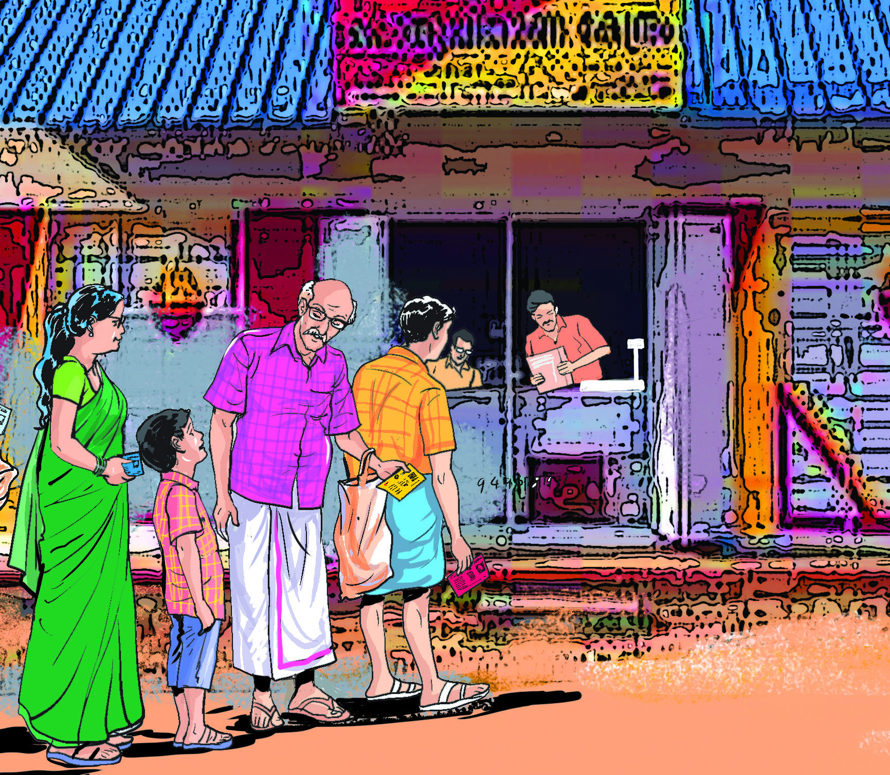
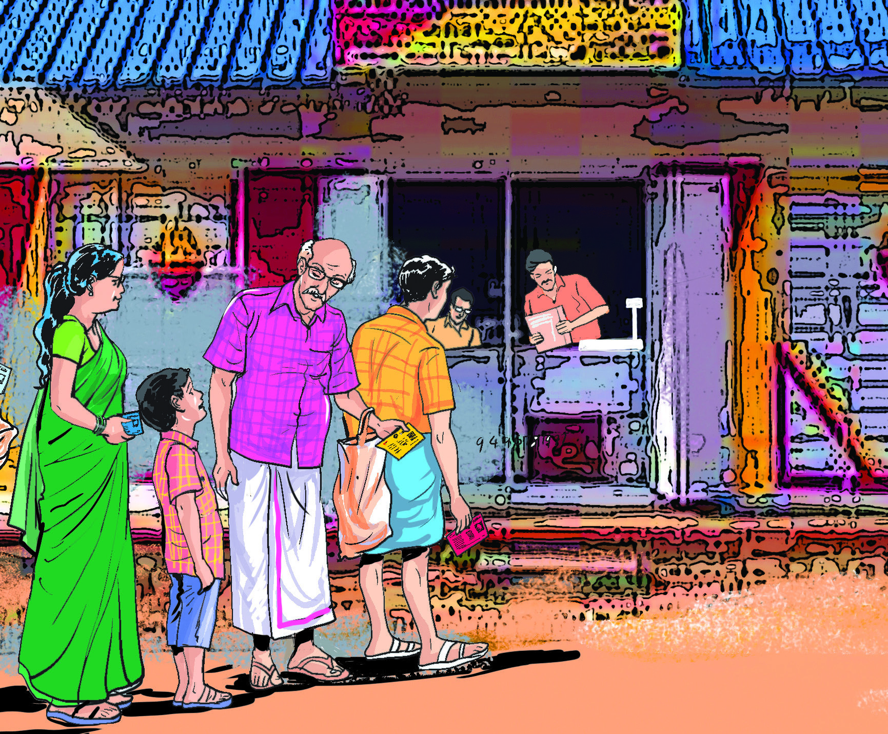
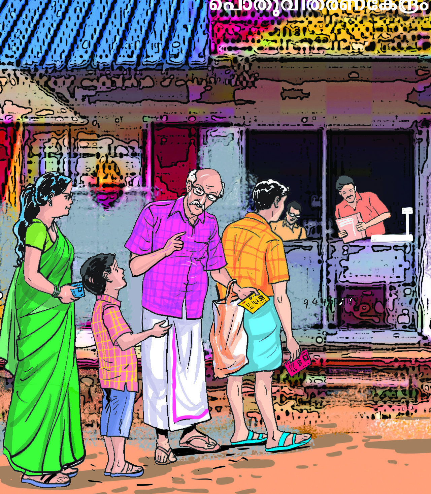

Page 46
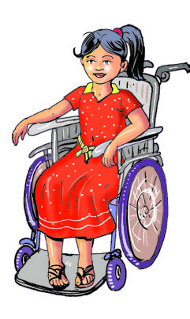


150
Social Science Class V
Let’s listen to the thoughts of Neenu and Vicky after returning from
Peeli’s village.
Sources of family
income of Neenu
Sources of family
income of Vicky
• lease
•
• business
•
Haven’t you taken note of the thoughts of both the friends?
Don’t they share about the sources of income of their families in their
thoughts?
List the sources of income of both the families.
I was worried whether I could go everywhere when I went to
Peeli’s village with my friends. Peeli, her mother, her father
and their village welcomed us with much enthusiasm. How
beautiful were the sights in the village! Peeli’s family uses
the agricultural produce cultivated by her father for food. It
had the taste of the food that I usually have in my ancestral
home in my village. I have to tell my family that we have to
start farming on our farmland that is given for lease. I wish we
moved back from this government quarters to our ancestral
village, so that I could enjoy the happiness of my village also.
My parents can then go to the office from there.
I went to Peeli’s village wondering how I could spend a day
without any of the amenities of the city. But, I too enjoyed a
day in Peeli’s village without mobile network or Wi-Fi. When
I returned from there, my perception that only city life was
interesting, changed completely. The taste of food there is
different from the taste of packaged food here. We lead a busy
life in a city apartment with parents who are in the business
sector. I felt relieved when my grandfather came here after
retiring from government service.
Page 47

151
Towards Equality
Is the income of the two families the same?
Family
Monthly Income (approx.)
Vicky
3,00,000 - 5,00,000 (between three lakh and five lakh)
Neenu
1,00,000 - 3,00,000 (between one lakh and three lakh)
The table shown below gives an approximate estimate of the monthly
income of both the families.
Family
Monthly Income (approx.)
A
4,00,000 - 5,00,000 (between four lakh and five lakh)
B
3,00,000-4,00,000 (between three lakh and four lakh)
C
2,00,000-3,00,000 (between two lakh and three lakh)
D
1,00,000-2,00,000 (between one lakh and two lakh)
E
50,000-1,00,000 (between fifty thousand and one lakh)
F
25,000- 50,000 (between twenty-five thousand and fifty
thousand)
G
10,000-25,000 (between ten thousand and twenty five
thousand)
The table shown below gives the approximate monthly income
of various families in a panchayat. Observe the table and identify
the family with the highest income and the one with the lowest
income.
• Family with the highest income ........................
• Family with the lowest income ........................
Income of various families (approx.)
Reasons for Difference in Family Income
•
difference in income from employment
•
difference in the sources of income
Page 48

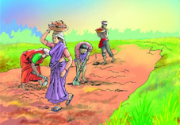

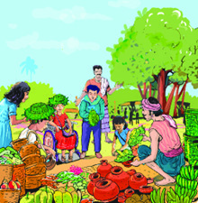
152
Social Science Class V
Difference in Income from Employment
From the above pictures, point out the different employments that the
people are engaged in?
•
•
•
•
Do you think that those who engaged in different employments get the
same income?
Based on the nature of employment, the income from it varies.
Difference in the Sources of Income
Variation in the sources of income is a major cause of variation in the
family income. Bank deposits, stock investment and assets are various
sources of income. Income will vary based on the difference in the
source of income. Those who have a high income can meet more needs.
However, people of the low-income group are often unable to meet even
their basic needs.
Page 49


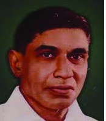


153
Towards Equality
Discuss the extent of influence of family income in meeting the
needs of your family.
families with an
amount of
high income
families with an
amount of
low income
families with an
amount of
moderate income
Generally, families can be classified into three groups based on their income.
Haven’t you noticed that there is a difference between the income
generated from a job and from other sources? The inequality in
employment and income leads to the economic inequality in the society.
Inequality occurs when the available resources in a society are not
distributed equally.
Economic Inequality
Economic inequality refers to the unequal distribution of wealth,
income or resources among individuals or groups in a society.
This often leads to the inequalities of access to opportunities, education,
employment, healthcare and political power. Governments seek to address
economic inequality through implementing various policies and initiatives
aimed at a more equitable distribution of resources and opportunities.
Does only inequality exist in the economic sector of the society?
Read the notes.
Inter Dining (Misrabhojanam)
Since the beginning of the 19th century, many
struggles have been started in Kerala to put an end
to the discrimination that existed in the consumption of food,
essential for sustaining the very life. Since the Samapanthi
Bhojanam which was held under the leadership of Ayya
Vaikuntaswamy’s Samatva Samajam, many struggles have
been held in this way. One of the most notable of these protests
is the Misrabhojanam organised by K.Ayyappan, the editor of
the newspaper ‘Sahodaran’ in Cherai, Ernakulam district on
29 May, 1917. Consequently, he had to endure severe physical
torture and threats. This event was a milestone among the
struggles against discrimination.
Ayya Vaikunda
Swamikal
Sahodaran
Ayyappan
Page 50


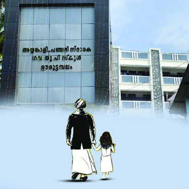

154
Social Science Class V
What kind of inequalities are mentioned here?
Social inequality is a condition where all groups of people are not socially
equal. The unequal condition in status, rights and opportunities creates
social inequality.
Upper Cloth Protest (Melmundu Samaram)
The Upper Cloth Protest was led by the women of South Travancore
from the beginning of the nineteenth century for the right to use upper
cloth as part of their dress. After a series of protests, the Travancore
Government proclaimed the right to wear any dress for every one irrespective
of caste or religion according to their will and pleasure. However, many were
not able to wear their favourite clothes due to the customs imposed by the caste
systems.
Ayyankali-Panchami Memorial School
The Travancore government provided free
education up to the fourth standard to all
categories of children irrespective of caste and religion.
However, the so called upper-caste school authorities
did not admit children hailing from lower castes. As a
protest against this, Ayyankali took the hand of a Dalit
girl named Panchami and went to Ooruttambalam school and demanded
that she be admitted to the school. Although the authorities were forced to
grant admission to Panchami, the upper caste people set fire to the school the
same night. The debris of the burnt bench and other equipment is kept in the
school museum. Thereafter the school has been named Ayyankali-Panchami
Memorial School, Ooruttambalam, Thiruvananthapuram.
Social Inequality
Social inequality refers to the unequal distribution of resources,
opportunities and status within a society. Social inequality manifests
itself in various forms such as inequality in income and wealth, lack
of access to education and healthcare, discrimination based on race and gender
and unequal representation in political and social institutions. The Government
formulates policies aimed at promoting equality, justice, and equal opportunities
for all members of society to address social inequality.
Page 51

155
Towards Equality
Let’s examine the causes of social inequality and the factors that influence
them.
Why did people from certain social groups have to face
discrimination? Do similar situations exist in society?
Discuss.
Causes of social inequality
Factors that influence
Economic inequality
• disparity in income
• unemployment
• lack of availability of resources
• difference in wages/salary
Educational inequality
• lack of quality education
• limited educational opportunities
Inequality within social
structures
• discrimination based on caste, religion,
race, gender status and special needs
• inequality due to social norms
Geographical inequalities
• rural-urban disparity
• lack of availability of resources
Historical factors
•
colonisation
•
slavery
•
repression
Discuss the causes leading to social inequality and the
factors influencing them in your class and make notes.
Page 52
156
Social Science Class V
Consider the above two scenarios. What are the problems they face?
•
Shouldn’t all these be addressed? While resolving the problems of Shanti
and Akash, the issues of all other communities who face social inequality
have to be resolved.
Social progress is possible only when the basic needs of all the people are
met. Adequate facilities and conditions for the same have to be set up.
Addressing social inequality requires comprehensive policy reforms. To
this end, Government formulates and implements educational initiatives
and projects for social justice and equal rights.
Government Interventions to Address Socio-Economic Inequality
The governments implement various schemes for the uplift of the
people who face inequality. Central and State governments have been
implementing various schemes to provide food, shelter, education,
healthcare, and other basic facilities to all sections of people. Let’s get to
know them.
Welfare Pensions
Welfare pensions are social security schemes aimed at providing financial
assistance to people who are socially and economically backward as well
as vulnerable groups. The chief beneficiaries of welfare pensions are
senior citizens, the differently abled, widows, unmarried women above
50 years of age, farmers, etc.
What are the various welfare pensions implemented by the governments?
• Agriculture Labour Pension
• Old Age Pension
Shanti is studying in class 5. Her family consists of father, mother,
sister and brother. Being in the coastal area, they live in fear when the
sea gets rough. The biggest problem they face is the absence of a safe
and secure home.
Akash and his family live in a hilly area. It is difficult for Akash and
his sisters to go to school due to inadequate transport facilities.
Page 53


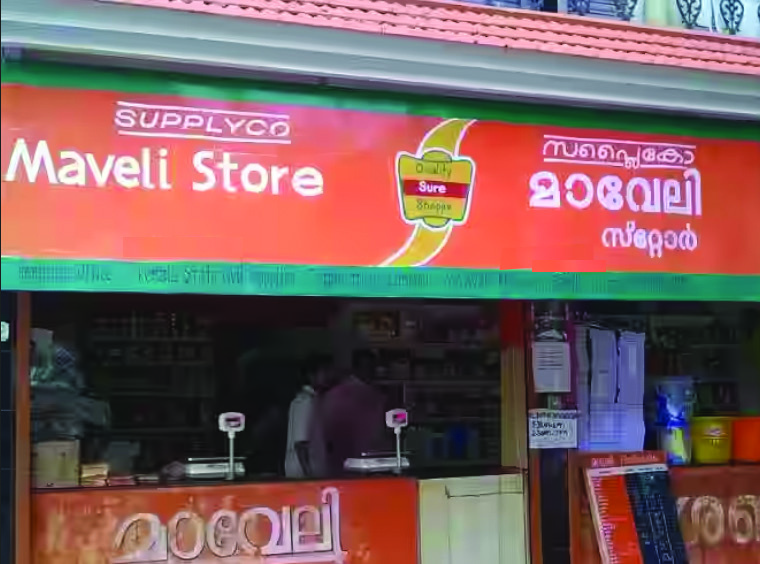


157
Towards Equality
Scholarships
Many scholarships for students have been introduced for educational
purposes. Find out and list the scholarships available for students.
• Pre-Matric Scholarship
Haven’t you noticed the pictures? Public Distribution Centre, Maveli
Store and Neethi Store are systems that provide essential commodities
at low prices. Through these centers, we get goods at cheaper rates with
the subsidy provided by the government.
Several schemes and programmes are being implemented by the central
and state governments and the local self-governments for poverty
alleviation and to reduce social inequality. Let’s get to know a few of
them.
Mahatma Gandhi National Rural Employment Guarantee
Scheme
The scheme ensures unskilled physical employment for not
less than 100 days in a financial year to any family residing in
rural areas. Its beneficiaries are individuals above 18 years old.
It is a poverty alleviation scheme designed and implemented
by the Central and State governments.
Maveli Store
Neethi Store
Public Distribution Centre
Find and discuss, in the class, the opportunities and schemes that
help to uplift the students educationally, address their backwardness
and reduce inequality.
Apart from these, what are the other schemes being implemented by the
government to address socio-economic inequality?
Subsidy
A subsidy is a financial benefit or support provided by the government
to individuals or institutions as per criteria. Subsidy can be direct or
indirect. Direct subsidy refers to support provided in cash. Indirect
subsidies include lowering of tax rates and charging a lower rate of interest on
loans.
Page 54


158
Social Science Class V
Life Mission
The objective of the complete housing scheme (LIFE) is
to provide a safe and decent housing system in Kerala
for all the landless, homeless, people with homes that
have not been fully constructed and those whose existing
house is not fit to live in. This is a scheme designed and
implemented by the Central and State governments.
Theeramythri
The Government of Kerala is implementing ‘Theera
mythri,’ the small business enterprises development
plan to bring women from the families of the fisher
folk into the mainstream of society by making them
entrepreneurs. Through this project, implemented
throughout Kerala, it is envisaged to ensure the socio-
economic empowerment of fisherwomen.
Kaivalya
This is a rehabilitation scheme implemented by the
Government of Kerala for the differently abled job
seekers. The objectives of this project consist of equality
of opportunity and social inclusion.
Vidyavahini
Vidyavahini is a project to provide transportation
facilities for tribal students to go to school. This scheme
is implemented to ensure transportation facility for
students who belong to the tribal communities and to
prevent dropouts.
Janani Janmaraksha
A scheme implemented by the Government of Kerala to provide
nutrition to pregnant women and mothers who belong to tribal
groups.
Prathibhatheeram
A scheme implemented by the Government of Kerala for the educational
advancement of children hailing from the coastal region.
Gothrabandhu
A scheme by the Government of Kerala to appoint qualified persons from
the tribal communities with ample knowledge of both tribal language and
Malayalam as teachers in primary schools to achieve the objectives of solving
the language issues of tribal students and to prevent dropouts.
Page 55


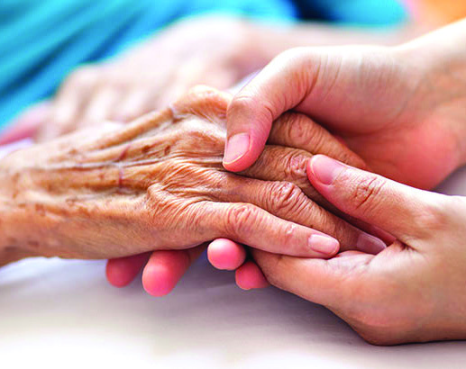
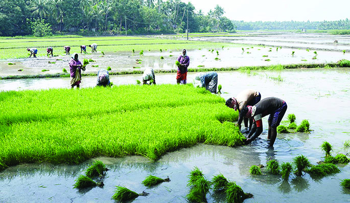

159
Towards Equality
Conduct interviews with elected representatives of local self
governments to gather more information about such projects.
Projects
Beneficiaries
Features
Mahatma Gandhi
National Rural
Employment
Guarantee Scheme
Those who have completed
18 years of age in the rural
area.
_______________
Life Mission
_______________
Provide house
Vidyavahini
_______________
_______________
Theeramaithri
Fisherwomen
_______________
Kaivalya
_______________
Equality of
opportunity
Complete the table given below.
Prepare a poster to create awareness of various schemes
implemented by the governments to address socio-economic
inequalities.
We have discussed how the economic, educational, geographical, and
historical factors lead to social inequality. Such inequalities also create
obstacles to social progress. Central and State Governments have been
devising and implementing various schemes to ensure social progress
and equality guaranteed by the constitution. All human beings should
have the opportunity to meet their basic needs and live independently.
We need to intervene in society by recognising that all human beings are
equal and realise the need to bring together those who face inequality.
‘Growing Kerala -Tribute
to the Nurturers’
A salute to the hands that feed us
Page 56

160
Social Science Class V
സാമൂഹിക-
സാമ്പത്ിക അസമത്്വങ്ങൾ പരിഹരിച്ച്
വ്്യത്്യസ്ത ജനവിഭാഗങ്ങൾക്ിടയിൽ തുല്്യത ഉറപ്പുവരുത്തേണ്ടത് ഒരു സമൂഹം എന്ന
നിലയിൽ നമ്ുടെ ഉത്തരവാദിത്്വമാണ്്. സർക്ാർ സംവിധാനങ്ങൾ ഇതിനായി
വിവിധ പദ്ധതികൾ ആവിഷ്്കരിച്ച് നടപ്പിലാക്കുന്നുണ്ട്്. ഇവയെ
പരമാവധി
പ്രയോ�ോജനപ്പെടുത്തിക്്കകൊണ്ട്് തുല്്യതയിലേക്ക്് നമുക്ും ചുവടുവയ്കാം.
Extended Activities
1. Identify the various schemes and their objectives implemented
by the Central/State Governments to materialise socio-econ
omic equality in post-independent India. Note them in a chart
and display in the class.
2. Conduct a seminar on ‘Socio-Economic Inequalities and
National Development.’ Sub-topics to be covered in the seminar:
• social inequality
• economic inequality
• reasons for inequality
3. Organise public awareness programmes under the auspices of
the Social Science Club by preparing placards, posters, etc. of
the schemes implemented by the government to resolve socio-
economic inequalities.